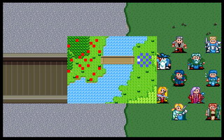

第十章 抢攻桥梁

 雷特
雷特 米兰
米兰 克隆
克隆 艾利欧
艾利欧 巴拉多
巴拉多 洛加
洛加 希瓦那
希瓦那 卡里斯
卡里斯 莱特
莱特 凯亚
凯亚 莉娜
莉娜 索尼克
索尼克
本关敌人：
 LV12 托巴 （HP720,AP252,DP188,HIT138,EV38,MV3）
LV12 托巴 （HP720,AP252,DP188,HIT138,EV38,MV3）
 LV10 狂战士x3 （HP560,AP250,DP73,HIT105,EV25,MV4）
LV10 狂战士x3 （HP560,AP250,DP73,HIT105,EV25,MV4）
 LV8 精锐队步兵x8 （HP420,AP136,DP109,HIT106,EV16,MV4）
LV8 精锐队步兵x8 （HP420,AP136,DP109,HIT106,EV16,MV4）
 LV8 弓箭手x3 （HP300,AP136,DP30,HIT114,EV24,MV4）
LV8 弓箭手x3 （HP300,AP136,DP30,HIT114,EV24,MV4）
 LV5 魔法师x3 （HP200,AP80,DP50,HIT85,EV20,MV4,激电冲）
LV5 魔法师x3 （HP200,AP80,DP50,HIT85,EV20,MV4,激电冲）
 LV5 僧侣x2 （HP360,AP80,DP95,HIT75,EV15,MV3,聚合气）
LV5 僧侣x2 （HP360,AP80,DP95,HIT75,EV15,MV3,聚合气）
胜利条件：敌人全灭
失败条件：雷特死亡
战后报酬：
$4400G/$14400G
攻略简要：
看名字也知道，此关的重点在桥梁上的战斗，由于桥只有3格的宽度，所以派谁占前面就相当重要，建议派战士较好，然后弓箭手在后面掩护，对方的狂战士也不容忽视，常常会进行卡位的动作，敌方步兵用近身战对付，弓箭手就让骑兵冲出去解决，通过桥梁时，先不急着打托巴，先将附近的法师僧侣清除，再收拾最后的强敌托巴，托巴的攻击力并没有莱卡斯高，但是防御力却相当惊人，最好用魔法来攻击。
战后商店道具:
武器： |
防具： |
道具： |
剧情对话：
莉娜:通过了前面那座桥，再走一段路程，就可以到达洛梅特城了。
雷特:等等!前面好象有军队驻守!
托巴:雷特王子，你们终于来了。我是驻守在这个地区的领主托巴，听说你们要去格菲迪城，故前来在此等候。
雷特:看你全副武装的样子，可是打算阻挡我们过桥吗?
托巴:...是的。现在的哈奇陛下虽然稍微严苛了些，但是多年来也保护人民不再受魔族侵扰。所以我不希望你们来打破目前的平静生活，使得人民再度陷入战乱的恐慌之中。请殿下为人民着想，三思而后行。
卡里斯:照你这样说来，为了目前的和平，人民就该忍受贫困、饥馑不堪的生活吗?你身为一个领主，就该真正地为领地的人民着想，让他们能够享受到以往真正安乐祥和的生活，而不止是为生存而苟活于世界上!
托巴:...或许你们说的有理，但是你们能保证事情的变化，真的能如你们所愿吗?...总而言之，我是不会让你们通过这座桥的!
雷特:...这样看来，不诉诸武力是不行的了...
战胜了托巴
托巴:唉...你们胜了，过去吧!
克隆:托巴，当初你是也对先王相当忠诚的一员猛将，为何如今甘愿为虎作伥?
托巴:...我在和魔族数次的对战中，每次都造成人民及士兵伤亡，使我深深感到自己的无力...现在的哈奇陛下虽然在做法上有些不尽仁义之处，但是他至少在十多年来，使得魔族再也不敢再来侵犯，保全了人民的性命。
索尼克:你以为事情真的有如此单纯吗?
托巴:咦!我好象有见过你...啊!是圣者，真是失敬!
索尼克:实际上，哈奇已经和魔族订下密约，表面上看起来好象已经相安无事，但私底下则是定期献祭一些活人，以满足它们的欲望。
托巴:这...难道十几年来领地内的一些人口失踪案件，大部分都是因为如此?
索尼克:恐怕是的，但是魔族也不可能就因此而满足...我担心的，就是有其它更大的阴谋，只是现在还无法预料。
托巴:...这么说来，我岂不是成了他们阴谋的帮凶...
雷特:托巴领主，你也是为了人民着想，我不会怪你的。
托巴:殿下，若不嫌弃的话，请先到我那里休息，以聊表我的歉意。
希瓦那:殿下，这是否...
雷特:不，我相信托巴领主是真诚的。既然如此，就请带路吧!
第十章完